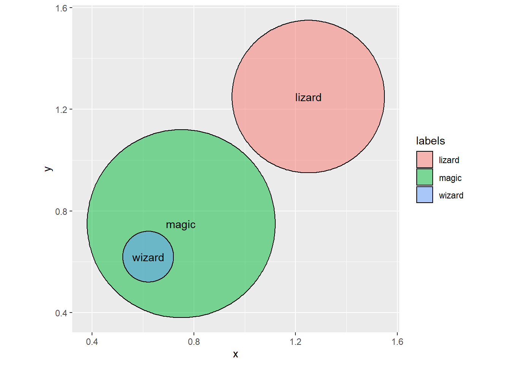

Chapter 1 Plausibility, Probability and Information
According to Aristotle, if two claims are well-founded, their truth values can be ascertained. A plate is either green, or it is not. When thrown, the plate will land without a chip or it will break. If I claim that when I throw the plate, it will land with out a chip and you disagree, I can simply throw the plate to find out who was correct. One part of this is a mind game, a thought experiment a potential outcome. The other is a reality of actually throwing the plate and observing its status on landing. We will eventually call the mind-game a hypothesis and the reality a datum.
It is in disagreement that logical deduction might (plausibly) break down. There is no guarantee that the plate will break, or, for that matter, that it will chip. We must simply experiment with plate(s), green, blue or otherwise, to support the claim (or not). These claims arise in everyday life. For example, despite my poor performance in plate throwing in the past, there is no cogent reason to believe that it is absolutely, positively false that the plate I throw would land without a chip. There is a degree of acceeptance, of plausibility, in one side of the claim, and on the other as well. Certainly it is not as false as the claim that \(2+2=5\) in base 10 arithmetic, or the patently spurious claim that true is false or my cat is a dog.
Claims about things that are neither definitely true nor definitely false arise in matters both mundane and consequential: producing weather reports, catching the bus, predicting the outcomes of elections, interpreting experimental vaccine results, and betting on sports games, throwing the plate, to name just a few.
So we would benefit from a method of comparing claims in these situations – which atmospheric model produces better predictions? What is the best source for predicting elections? Should I blow three times on my lucky dice, or is this all just a figment of my denial based imagination?
1.1 Some Surprise
The goal, in all the cases above, is to guess about something that we don’t or can’t know directly, like the future, or the fundamental structure of the economy, or reasons why customer preferences change, on the basis of things we do know, like the present and the past, or the results of an existing or past experiment.
Mostly we guess. Some us try to systematically consider and attempt to support with evidence the guess. Lacking precision, and sometimes even accuracy, we try to avoid bad surprises. Goods ones are often welcome. If I use the NOAA weather application on my smart phone it might not surprise me to see rain pelting down at 1630 this afternoon. After all the app indicated as much. In advance of the rain I brought in chair pads and anything else that might get ruined with rain. An airline pilot knows all the defects of her aircraft. That knowledge saves lives.
Our mortal inferences, clever or dumb as they are, must have a surprise somewhere between totally expected, or zero surprises and thus certain 100% of the ways to make the statement, and totally surprising and 0% chance of anticipation. We will generally be making statements like: it will probably rain tomorrow, or nine times out of ten, the team with a better defense wins. This motivates us to express our surprise in terms of plausibility and we hanker for more precision with probability.
1.2 Informative?
When we producing clarity in the various interrleted concepts of any discourse, argument, report, or presentation of results in the process of analysis. The process begins with clearly definitions of data, methodology, assumptions, conclusions, and interpretations.
Statements encapsulate the products of analysis. We define a statement, a literal, as a linguistic construct at a minimum consisting of a noun and verb, that is, a subject and a predicate. We might add an object, also a noun, too. If we agree that analysis produces knowledge, and knowledge is justified true belief,1 we will argue only when we dispute the (plausible / probable) true or false judgment. The dispute itself derives ultimately from what is valuable to discuss (Lepore and Stone (2006)). The practice of analysis is then the raising and answering of questions for reflection about the meaning of statements of results emanating from the analysis.2
We could use possible, probable, reasonable, and more generally if possible, plausible as in appearing worthy of belief. Let’s start with Aristotle’s apodeixis (Gr., showing forth; a proof as demonstrative argument) found in Aristotle (n.d.), especially the books on prior and posterior analytics.
Ultimately we ask: do we have enough of the right information to make a credible judgment? If so, are we also willing to implement the implications of a decision based on justified true belief itself? Here we must define information.
The word information itself derives from what is inside ( in- ) a shape ( form ) and more broadly an idea.3 The air molecules inside a blown up balloon is analogous to data, facts as we might see, hear, smell, and store. The balloon (please prescind, using a willing suspension of disbelief, from the material a balloon is made) shapes the air molecules, taken together in the context of elastic enclosure, into the shape of the expanded balloon. The shape of the balloon expanded such that the volume of air molecules expands the balloon, is analogous to the idea that shapes data.
We will see that information only occurs when someone has that aha! moment. It occurs when we experience the unanticipated. It happens when we are surprised by an outcome. At its base value, information is then the unfolding of uncertainty.
The shape of data is often mentioned in statistics where it means producing a frequency distribution of ranges of data from low to high values. What the frequency distribution does to data is order the data, bin and group the data into low to high categories, and count the number of low to high data elements. All of that shaping of the data is the application of ideas (order, groups, frequencies) about data.
So how much information do we need (plausibly)? We can follow the discussion about the English language in Feynman and Allen (1996) and Edwin T. Jaynes (2004). Information, like mass, velocity, volume, can be measured. Its measure is the bit . Let’s start with the English language. We have 26 letters and punctuation (e.g., . , ? ! : ;)for a total of 32 symbols at our disposal. Of course we do not use all 32, but we do have them available to us.
For the moment we have \(n\) equally plausible messages to send. One message might be a tweet line Got up and has some breakfast and another Didn’t do my chores yesterday. Assign each message a number of bits \(I\) needed to send the message. We might recall a bit is a binary set of numbers, 0’s and 1’s. Binary means two. The first part of the encoded message might be a 0, the second might be a 0 or a 1, the third might be a 0 or 1 following the 0 and following the 1, and so on. For example we might code this.
\(\text{Got up and has some breakfast} = 0111000100\)
This is now easy enough to send in packets of on or off voltages across wireless networks.
If we need \(I\) bits to send the message, then we need
\(2^I = n\)
or, remembering some long-lost algebra about extracting exponents,
\(I = log_2n\)
The 2 is because we have two possibilities for coding at each stage of coding our message. The n are the number of messages to be coded, send, and decoded by our communication system.
If we have 10 messages to send, then we need \(I = 3.32\) bits, really four bits to do the job. That is the way we will characterize information about messages.
Suppose our language has \(xN\) symbols to send and receive. If \(N=32\) is the number of symbols for one message segment in English, then for a string of \(x=2\) segments, say \(us\) for example, or \(we\), or \(or\), we have 64 symbols we can use the convey the message. Hold on for dear life now! there are now \(n^2\) messages we can send in a two string message. If there are \(x=3\) messages like \(are\) or \(not\), there are \(xN=3\times 32= 96\) possible symbols in \(n^3\) possible messages and so on. We now have the drift. There are \(n^x\) possible messages to send, still all equally plausible.
Exhaustingly, what is the information now in bits if we area sending and receiving 5 messages?4
\(I(xN)=log_2(n^x)=xlog_2(n)= 3 \times log_2(5) = 7 \,\, bits\)
If we think of a bit as space on a card that carries the messages, we get an idea about the amount of information in the message. More information means more bits and takes up more space on the card. Space on the card is real. Bits are a measure we use as a convenience to talk about information on a physical medium like a card.
Now that we have the beginnings of a notion of information, quasi-quantiatively, we need to tackle plausibility. We said that each message is equally plausible to be on or off, true or false, and yes, this means we have to think about logic, which worries itself over the business of combining the truth values of statements.
1.3 We have a proposition for you
We move from information now; and just put that on hold for a bit (snarky, yes). Its well nigh time to develop the most basic algebra possible, the logic of George (???). We follow Polya (1954) and Edwin T. Jaynes (2004) in notation.
The logical product or conjunction is a both-and proposition. If \(A=1\), that is \(A\) is true, and \(B=1\), that is \(B\) is also then the proposition that both A and B must also be true. This proposition is symbolized with
\[ AB \]
and substituting the assigned truth values of \(1 = true\) and \(0 = false\), we can then in effect calculate that
\[ AB=(1) \times (1) = 1 = true \] Thus if \(A\) and \(B\) are true then taken together as both A and B is also true.
The logical sum or disjunction is an either-or proposition. If \(A=1\), that is \(A\) is true, and \(B=0\), that is \(B\) is false then the proposition that either A or B must be true. This proposition is symbolized with
\[ A + B \]
and substituting the assigned truth values of \(1 = true\) and \(0 = false\), we can then in effect calculate that
\[ A + B=(1) + (0) = 1 = true \] And also with these truth values
\[ AB=(1) \times (0) = 0 = false \] We can see then that conjunction and disjunction can yield diametrically opposed conclusions about the truth value of the two compound statements.
To deny a proposition we use the bar, read not A So if \(A=1=true\), then \(not\,\,A = \bar{A} = |1 - 1| = false\). Also if \(A=0=false\), then \(not\,\,A = \bar{A} = |0 - 1| = 1 = true\), where the vertical bars represent the absolute value operation needed to get the right logical answer from the binary arithmetic.
Let’s play with this. What is \(\bar{AB}\), again using the binary arithmetic of combining \(0\) and \(1\)?
What about the plausibility of \(A|BC\)? This is read the _plausibility of \(AB\) given, conditional upon, experienced with \(C\). The experience of \(C\) will allow us to include that which is fundamental to all decision making, the fact of a history and knowledge of events and their outcomes, including the experience of beliefs and changes in preferences to go along with anticipating the future of anything.
It turns out that the basic idea of conditioning, making assumptions, or creating implications of the form If A happens, then B happens is equivalent to the statement that if A does not happen, or B does happen. Here is an implication truth table to whet our burgeoning appetite for analysis.
| P | Q | if P then Q |
|---|---|---|
| TRUE | TRUE | TRUE |
| TRUE | FALSE | FALSE |
| FALSE | TRUE | TRUE |
| FALSE | FALSE | TRUE |
We can, sometime in the near future, of course check that the results of this table agree with the statement that not P or Q. Knowing this we can begin to argue – reasonably.
1.4 The power of plausible thinking
We talked about information, and some logic. Now we have the machinery to discuss plausibility. We recall that all messages were equally likely. We begin relax that assumption her and now.
Let’s begin with any two propositions or statements or messages \(A\) and \(B\). Specifically, let’s talk about the weather. We let
\[ \begin{align} A &= \text{It will start to rain by noon at the latest right here.} \\ B &= \text{The sky will get cloudy before noon, also right here.} \end{align} \]
The implication is the statement If A, then B. This is our starting point with plausibility. But we must first begin even more strongly with a guaranteed statement from the following deduction. If it will rain, then it must happen that the sky will get cloudy some nearly immediate time before it does rain, right here on the sphere of the earth.
| major | if A is true, then B is true |
| minor | B is true |
| conclusion | therefore, A is true |
Here is a Euler Diagram to help make the point.

The full name of this syllogism is modus ponendo ponens which is Latin for the way that, by affirming, affirms , also known as affirming the antecedent . Take the word plausible out of the syllogism and we have a deductive inference guarateed to be consistent with the logic of implication.5
Here is a truth table for modus ponens. Each column holds the truth values ( TRUE = T and FALSE = F) of each statement in the syllogism.
| P | Q | if P then Q | P | Q |
|---|---|---|---|---|
| TRUE | TRUE | TRUE | TRUE | TRUE |
| TRUE | FALSE | FALSE | TRUE | FALSE |
| FALSE | TRUE | TRUE | FALSE | TRUE |
| FALSE | FALSE | TRUE | FALSE | FALSE |
We can read this table line by line using this statement: If you get an A, then I’ll give you a lollipop. The statement will be true if I keep my promise and false if I do not.
Suppose it is true that you get an A and it is true that I give you a lollipop. Since I kept my promise, the implication, the statement, is true. This corresponds to the first line in the table. Doesn’t this sound like a logical conjunction? Both A and B are true, that is \(AB = (1) \times (1) = 1 = TRUE\).
Suppose it’s true that you get an A but it’s false that I give you a dollar. Since I didn’t keep my promise, the implication is false. This corresponds to the second line in the table. These truth values again act like a logical conjunction. If A is true and B is false, we have \(AB = (1) \times (0) = 0 = FALSE\).
and also line 4. What if it is false that you get an A? Whether or not I give you a lollipop (Q is true or Q is false), I have not broken my promise. Thus, the implication cannot be false, so the statement must be true. This case is no longer a simple logical conjuction, but we can use the negation to help us out with the idea that If A is false it is not-A, when A would otherwise be true. The conjunction \(\overline{A}B = 0 \times 1 = 0 = FALSE\).
Now we use (???) Prior and Posterior Analytics as our starting point. But insteadof the logically guaranteed modus ponens we weaken the guarantee in a syllogism called epagoge6
| major | if A is true, then B is true |
| minor | B is true |
| conclusion | therefore, A becomes more plausible |
This is a variation on the classical modus ponens consistent argument from finding positive evidence. Here the evidence is that \(B\) is true. This evidence does not guarantee that \(A\) is also true, but does lend credence, plausibility, to the existence of \(A\). So this morning it is true that the sky is cloudy. It is also true that when the sky was cloudy we can expect it to rain. It still might not rain if a strong wind dissipates the clouds; but it is plausible.
Let’s try a variation on the theme of modus ponens, the consistent argument from the absence of evidence aptly named modus tollens .The full name is modus tollendo tollens which is Latin for the way that, by denying, denies , also known as denying the consequent.
| major | if A is true, then B is true |
| minor | A is false |
| conclusion | therefore, B is false |
Insert the word plausibility again. This maneuver will weaken the modus tollens guarantee.7
| major | if A is true, then B is true |
| minor | A is false |
| conclusion | therefore, B becomes less plausible |
The evidence that \(A\) is false does not prove that \(B\) is also false. In this case we eliminated a piece of evidence and thus are even less confident in our hypothesis that \(B\) might be true.
In our everyday life we confront situations like this. Suppose that I stand on a poorly lit street and observe a masked very fit looking person of combat age is running, almost tripping, down the steps of the 6 train elevated (open-air) subway station at Middletown Road carrying a large tote bag. At the same time I hear the train platform announcement to beware of pickpockets. I conclude that the person is very plausibly a pickpocket. I am about to reach for my phone to call the police. I believed in that moment that my plausible argument had the power of the strongest of deductive reasoning, namely that the conclusion was beyond the shadow of any doubt.8
The use of modus tollens will allow us to think through how to find probabilities of conditional events using Bayes Theorem and the ability to update our assessment with the rule for total probability all logically consistent.
1.5 How many ways?
Let’s use a simple example. We have four voters in an upcoming election. They may be red or blue voters. Three of us go out and talk to three voters at random, that is, indiscriminately. One of us happens to come upon a blue voter, another of us, independently, happens to find a red voter, and the other separately finds a blue voter. This is the very definition of a random sample. Each of the finders does not know what the other is doing, all three do know that there are four voters out there and they happened to have independently talked to two blue and one red voter. How many red voters and how many blue voters are there?
Here are all of the possible conjectures we can make for \(blue = {\color{blue}\Box}\) and \(red = {\color{red}\Box}\) voters.
| 1 | 2 | 3 | 4 |
|---|---|---|---|
| \({\color{red}\Box}\) | \({\color{red}\Box}\) | \({\color{red}\Box}\) | \({\color{red}\Box}\) |
| \({\color{blue}\Box}\) | \({\color{red}\Box}\) | \({\color{red}\Box}\) | \({\color{red}\Box}\) |
| \({\color{blue}\Box}\) | \({\color{blue}\Box}\) | \({\color{red}\Box}\) | \({\color{red}\Box}\) |
| \({\color{blue}\Box}\) | \({\color{blue}\Box}\) | \({\color{blue}\Box}\) | \({\color{red}\Box}\) |
| \({\color{blue}\Box}\) | \({\color{blue}\Box}\) | \({\color{blue}\Box}\) | \({\color{blue}\Box}\) |
Reading this we see that there are 4 voters and 5 different voter compositions ranging from all red to all blue. Our sample is 2 blue and 1 red voter, so we can very safely eliminate the first and fifth conjectures from our analysis, but for the moment just keep them for completeness sake.
For each of the three remaining conjectures we may ask how many ways is the conjecture consistent with the collected data. For this task a tree is very helpful. Let’s take the first realistic conjecture the \({\color{blue}\Box}\), \({\color{red}\Box}\), \({\color{red}\Box}\), \({\color{red}\Box}\) hypothesis and check if, when we sample all of the four voters, what are all of the ways this conjecture fans out. So here we go.
We sampled a \({\color{blue}\Box}\) first. How many \({\color{blue}\Box}\)’s are in this version of the composition of voters? only 1.
We then sampled independently a \({\color{red}\Box}\). How many \({\color{red}\Box}\)’s are in this conjecture? Quite a few, 3.
Finally we sampled a \({\color{blue}\Box}\) at random. We know there is only one \({\color{blue}\Box}\) in this version of the truth.
So, it is just counting the ways: 1 \({\color{blue}\Box}\) way x 3 \({\color{red}\Box}\) ways x 1 \({\color{blue}\Box}\) way = \(1 \times 3 \times 1 = 3\) ways altogether.
When asked, many surmise that the 2 blue and 3 red conjecture is the right one. Are they right? Here is a table of the ways each conjecture pans out. We then in a separate column compute the contribution of each conjecture to the total number of ways across the conjectures, which is 3 + 8 + 9 = 20 ways. Also each of the conjecture propose a proportion \(p\) of the successes, that is, the blue voters in this context.
| 1 | 2 | 3 | 4 | proportion | ways | plausibility |
|---|---|---|---|---|---|---|
| \({\color{red}\Box}\) | \({\color{red}\Box}\) | \({\color{red}\Box}\) | \({\color{red}\Box}\) | 0.00 | 0 x 4 x 0 = 0 | 0.00 |
| \({\color{blue}\Box}\) | \({\color{red}\Box}\) | \({\color{red}\Box}\) | \({\color{red}\Box}\) | 0.25 | 1 x 3 x 1 = 3 | 0.15 |
| \({\color{blue}\Box}\) | \({\color{blue}\Box}\) | \({\color{red}\Box}\) | \({\color{red}\Box}\) | 0.50 | 2 x 2 x 2 = 8 | 0.40 |
| \({\color{blue}\Box}\) | \({\color{blue}\Box}\) | \({\color{blue}\Box}\) | \({\color{red}\Box}\) | 0.75 | 3 x 1 x 3 = 9 | 0.45 |
| \({\color{blue}\Box}\) | \({\color{blue}\Box}\) | \({\color{blue}\Box}\) | \({\color{blue}\Box}\) | 1.00 | 4 x 0 x 4 = 0 | 0.00 |
We cannot help but note that the proportion of ways for each conjecture can range from 0, perhaps to 1, since the proportions add up to 1. The number of ways also expresses the number of true consistencies of the data with the conjecture, an enumeration of the quality of the logical compatibility of conjectures with what we observe.
We might now revise our common sensical surmise that 2 blue and 2 red is the better conjecture. However, if we use the criterion that the conjecture with the most ways consistent with the data is the best choice for a conjecture, then clearly here we would say that there are 3 blues and 1 red. Perhaps we have a better criterion that would choose our equinanimous choice of 2 blues and 2 reds? It does not appear to be so.
Ways are the count, the frequencies of logical occurrence of a hypothesis given the data. The data includes the knowledge that there are possibly blues and reds, that there are 4 voters, and that we sampled 2 blues and 1 red. The relative frequency of the ways in which our conjectures are consistent with the data is what we will finally call probability.
The plausibility is a measure between and including 0 and 1.
The sum of all plausibilities is 1.
We have just quantified the plausibility of logical truth values. We have also found a very compelling criterion for the choice of a conjective given the data and circumstances surrounding our inquiry.
1.6 How informative?
Now the piece de resistance we have been waiting for is at hand. We have the tools: information measurement, logic of plausible inference, probability as plausibility, a criterion for making a decision? If we were to say, pick the most plausible, now also the most probable inference, is this not really to say that it is the most informative and thus the most surprising inference?
We have \(i=5\) conjectures \(c_i\), each with an assignment of the probability of finding the inference in data, thus 5 probabilities \(p_i\). We also agree that each conjecture \(c_i\) is independent of the other, that is mutually exclusive, and also mutually exhaustive. In this way the probabilities indeed will add up to 1.
Each conjecture has \(N=4\) symbols in it. There are only 2 symbols to work with, \(B=blue\) and \(R=red\) in these messages. There are \(N!=4 x 3 x 2 x 1 = 24\) ways to arrange symbols. But these are constrained by two symbols in this pile so we have on average this many combinations:
\(\frac{(N + s - 1)!}{N!(s-1)!} = \frac{5!}{4!1!} = \frac{120}{24}=5\,\,conjectures\)
In the numerator are the four voters, two kinds of voters, less one. This gives us \(5!=120\) total ways to arrange this set of conjectures. But there are \(4!(2-1)!=\) ways to pick 2 kinds of voters from a population of 4 voters. That comes from the notion that there are \(4!\) ways to choose 4 voters and having chosen the first voter from the voter urn, there are \((2-1)!\) more ways to choose voters, either blue or red, each and every time we randomly go out to the voting population, all with replacement. Phew!
Now that we have our sea legs in combinatorics, each conjecture of length \(N=4\) has two symbols \(s_1=blue\) and \(s_2=red\) with probabilities of occurrence in the message \(p_1=p(blue)\) and \(p_2=p(red)\) here \(0.50\) each. The portion of the messages that are blue are \(Np_1=4 \times 0.5=2\) and red are \(Np_2=4 \times 0.5=2\) as well. The ratio
\(\frac{N!}{(Np_1)!(Np_2)!} = \frac{4!}{2!2!}=\frac{24}{(2)(2)}=6\)
in turn gives us the number of combinations of symbols and messages. This is the average number of ways a message can be formed. The expected amount of information in these messages, as conjectures, is
\(<I> = log_2\left(\frac{N!}{(Np_1)!(Np_2)!}right)\)
For large enough \(N\) we can use Stirling’s Approximation9
\(<I> = N \sum_{i=1}^2 (-p_i\,log_2 \,p_i)\)
So the amount of informativeness in each voter conjectures is
\(<I> = 4 \sum_{i=1}^2 (-0.5 \,log_2 \,0.5) = 4\)
This is intuitively correct: 4 bits of information in a population of 4 with 2 equally likely choices.
What about the 5 conjecture? Now \(N=5\) and we only need \(p_2=0.15, p_3=0.40, p_4=0.45\) since the other probabilities are 0.
\(<I> = 4 \sum_{i=1}^3 (-p_i \,log_2 \,p_i) = 4(1.5)=5.8\)
This is nearly 2 bits more informative than any single conjecture. The best conjecture contributes 2.1 bits of information on its own or 36% of the informativeness of the total distribution of conjectures we reviewed.
1.7 Nota Bene
The location and scale parameters \(\mu\) and \(\sigma\) we often calculate are not the mean and standard deviation of data \(x\). They are not properties of the physical representation of events called data. These parameters do carry information about the probability distribution of the representation of physical reality in data. To say \(\mu\) is the mean of the data is to ascribe a mind’s eye idea to the physical reality, to invest in physical, objective reality, a property that only exists in the mind. This is an example of the mind projection or reification fallacy much in vogue in the circles of fake, or better yet, chop logic. In the same way, probabilities only exist in our minds: there is no physical reality that is a probability, just a mental construct that helps us think through potential outcomes.
So why is it that we so much so rely on the past to predict the future? Perhaps this is a fool’s errand. I
When we say A implies B we mean that \(A\) and \(AB\) have the same truth value. In logic every true statement implies every other true statement. Just knowing that \(A\) and \(B\) are true does not
References
Aristotle. n.d. Organon and Other Works. Translated by W. D. Ross. Andronicus of Rhodes. https://archive.org/details/AristotleOrganon.
Edwin T. Jaynes, ed. G. Larry Bretthorst. 2004. Probability Theory: Logic of Science. Cambridge, U.K.: Cambridge University Press.
Feynman, R. P., and R. Allen. 1996. Lectures on Computation. Advanced Book Program. Basic Books. https://books.google.com/books?id=-olQAAAAMAAJ.
Lepore, Ernest, and Matthew Stone. 2006. “Logic and Semantic Analysis.” In Philosophy of Logic, edited by Dale Jacquette, 173. North Holland.
Polya, George. 1954. Mathemtics and Plausible Reasoning. Princeton, N.J.: Princeton University Press.
Plato (n.d.) Theaetetus 210a-b for details. Through careful, and relentless, dialectic, Socrates sculpts the features of knowledge as justified true belief as opposed to merely sensation and perception. At the end of this dialogue, Socrates leaves Theaetetus to answer the law suit against him that lead to his condemnation and death.↩
The Greek philosophers, including Aristotle, regularly used both shape, Gr.: \(morph{\hat{e}}\), and idea, Gr.: \(e\hat{i}dos\), to represent the notion of form. See (Title Needed, n.d.).↩
Edwin T. Jaynes (2004) uses a base 10, in only because the convenience of decimal arithmetic and that many of us have 10 fingers and 10 toes. The resulting information measure is none other than a decibel.↩
It is invalid to affirm the consequent, that is say B is true, so A must be true, a frequent and very misleading and logically illegal argument on talk shows, especially when the subject is political.↩
This syllogism is a logical induction from the particular to the general. The conclusion may be generally true or not. The modal may embeds a notion of plausibility that itself has degrees of measure. Opposed to epagoge is logical deduction called apodeixis.See this definition for epagoge.↩
It is invalid to deny the antecedent, that is use not A as a minor premise, another frequent and very misleading argument on talk shows, especially when the subject is political. This happens when we say if A then B, but not A, so not B. Grade promises and lollipops, clouds and rain, notwithstanding.↩
As the alleged pickpocket ran by me, she bumped into me and stopped briefly to apologize. She said she was in a hurry to get antibiotics to her son. If this was a deductive argument, did I not affirm the consequent, thus invalidating my claim?↩
Named after James Stirling, this was first stated by Abraham de Moivre: \(ln(n!) = n\,\,ln (n) - n + error\), very accurate even for small \(n\).↩